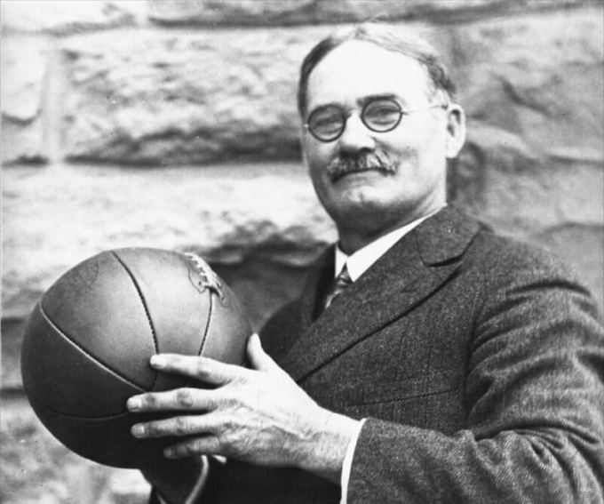

Beneficios de Jugar Basketball
El baloncesto es un deporte muy completo que desarrolla habilidades como equilibrio, concentración, autocontrol, personalidad, confianza y rapidez de ejecución, agilidad muscular y reflejos precisos que benefician la salud. Los beneficios directos al organismo para quienes practican basketball se observan desde la infancia, y entre ellos se cuentan el mayor desarrollo de estatura, masa muscular, reflejos y agilidad.
Historia

Los orígenes del baloncesto se remontan muchos años atrás. En la época de los mayas se practicaba el pok-a-pok, un juego en el que se utilizaba una pelota maciza de caucho que debía golpearse con los muslos y las caderas, y los perdedores eran sacrificados para ofrecerlos a los dioses. No obstante, el básquet, tal y como lo conocemos ahora, nació en 1991 en Estados Unidos, de la mano de James Naismith, profesor de educación física en la Universidad de YMCA, Springfield (Massachusetts).
Naismith quería inventar un deporte que pudiera practicarse en el gimnasio, para pasar los duros y fríos días de invierno. Observó los deportes que había entonces -el rugby, el béisbol, el fútbol, etc.,- basados principalmente en la fuerza o el contacto físico y pensó en uno que requiriese más destreza. El profesor pidió al conserje unas cajas de 50 centímetros de diámetro y lo que obtuvo fueron dos cestas de melocotones que hizo colgar a cada lado de la pista del gimnasio, a 3,05 metros de altura. Fue así como surgió el nombre de basketball, palabra inglesa que define el objetivo del juego: introducir la pelota dentro de una cesta.
Naismith diseñó trece reglas alrededor de este nuevo deporte. Como tenía 18 alumnos, los equipos de baloncesto estaban compuestos por nueve jugadores cada equipo. Después pasaron a ser siete miembros, para acabar siendo cinco. Con el tiempo las cestas de melocotones se convirtieron en aros metálicos con una red sin fondo. Y, también, surgieron los tableros, donde se colgaban las canastas.
El baloncesto cuajó rápidamente en EEUU y no tardó en dar el salto a Europa. Fue un deporte de exhibición en los Juegos Olímpicos de Ámsterdam (1928) y de Los Ángeles (1932), pero en los Juegos Olímpicos de Berlín (1936) Naismith tuvo la oportunidad de ver cómo el deporte que él creó se convertía en categoría olímpica. El baloncesto femenino tuvo que esperar unos años más, hasta 1976 para ser admitido como deporte olímpico.
Así es como poco a poco este deporte fue haciéndose un hueco a nivel mundial y, actualmente, el baloncesto cuenta con gran difusión en diferentes países, siendo uno de los deportes con más participantes y competiciones regulares en distintas zonas del mundo.